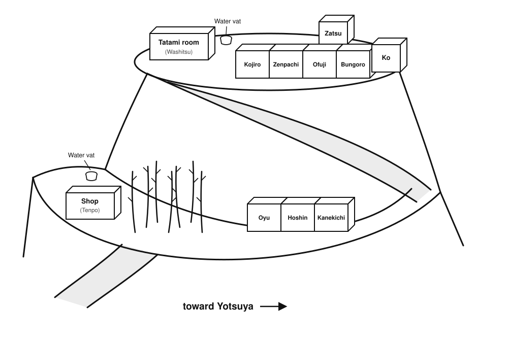

Characters & Setting
Principal Characters
Bungoro — proprietor of the Iguniya
Zenpachi — an idle vagrant
Kojiro — a fishmonger
Kanekichi — a carpenter
Hoshin — head priest of the family temple
Ofuji — Bungoro's wife
Oyu — the maidservant

In the summer of the second year of Bunkyu,[1] a rumor passed from neighborhood to neighborhood through Edo: that the eccentric rich man Bungoro meant to hold a hyakumonogatari within his own residence.
Bungoro's house had dealt in sake for generations. Three generations back, his forebears had opened a shop selling sake near Azuma Bridge, naming it the Iguniya. After he inherited the business, Bungoro applied himself diligently and built the Iguniya up, opening branch shops in many places. He could not be called one of the wealthiest men in the land, but he was at least a household of some local renown.
To say that Bungoro was eccentric was not to say he was hard to get along with. It was only that he loved to ferret out strange tales and curious happenings, and was obsessed with the yokai of the countryside. In his youth he had merely enjoyed chatting a while with his customers; as he grew older the habit only worsened. After turning the management of the shop over to his son, he moved with his wife and daughter to a hill on the western edge of the city, where he ran a small branch shop halfway up the slope. Ordinarily Bungoro would pay a few hired men to go about the city collecting hearsay, then have the strange tales they gathered told back to him, and afterward set the stories down on paper. Even so he remained unsatisfied, and resolved to convene a hyakumonogatari, so as to hear his fill in one sitting. This time he publicly summoned people who knew a great many strange and curious tales to take part in the gathering, and those selected would actually receive a single koban as reward — one must understand that even a high official's concubine might not receive one or two ryo in a whole month — so a good many people in the neighborhood took an interest in the affair.
The so-called hyakumonogatari is a game handed down among the common folk. A company gathers together, lights one hundred candles, and takes turns telling tales of the weird; each time a story is finished, one candle is blown out. It is said that when all one hundred stories have been told, something uncanny will occur.
Bungoro had one further passion: he was exceedingly fond of collecting rare and curious objects. The house halfway up the hill had a warehouse, and it was filled with things he had gathered from far and wide — the sword that legend said had struck off the head of Taira no Masakado, the sake cup Oda Nobunaga was said to have made from the skull of Azai Nagamasa, talismans drawn by the very hand of Abe no Seimei... Although anyone with eyes could see that scarcely a single one of these was genuine — indeed, no few people had played to his weakness and cheated Bungoro with fakes — Bungoro simply could not help himself. He never showed his purchases to anyone, but locked them away in the warehouse, seeking nothing but the satisfaction of his own heart.
The constable's informant[2] Nenzo had also heard the news that Bungoro was to hold a hyakumonogatari. Though a single koban tempted him, and though he had encountered no small number of preposterous things since becoming an informant, he truly had no gift for storytelling and would surely not satisfy Bungoro, so he decided he might as well not bother to join the throng.
Before long Nenzo also heard that Bungoro had already settled on the people who would attend the hyakumonogatari. News travels fast in Edo, and even without deliberately inquiring, Nenzo learned who would be taking part. The mistress of the Sekiguchiya tobacco shop told Nenzo that one Zenpachi, a regular customer of hers, had actually been chosen to attend the hyakumonogatari. To think — a mere gambling-loving vagrant, and yet because he had heard so many of the disreputable goings-on of the back streets he had been selected to attend; what good fortune, the mistress sighed to Nenzo.
Zenpachi had a big mouth. Not only did he tell the mistress the news that he himself would attend, he reeled off in one breath the names of everyone else who would be there too. First was the carpenter Kanekichi, who lodged at the Sekiguchiya; because he often went up into the mountains he had heard a good many tales of the wild hills. The fishmonger Kojiro, who supported his mother alone, was well versed in the marvels of the sea. As for Hoshin, head priest of the family temple, there was no need to say more: as a venerable old priest of great virtue, he had even personally witnessed a fair number of hauntings.
When the mistress spoke these people's names, Nenzo felt a strange, inexplicable sense of familiarity, but for the life of him he could not say where he had heard the names before.
The hyakumonogatari was to be held two days hence, when the four chosen guests would be invited to Bungoro's residence. Nenzo reckoned that whatever discussion the affair stirred up would at most be confined to whether or not something uncanny had occurred, and that within a few days everyone would forget about it.
Murder at the Iguniya
Who could have foreseen that on the morning of the day after the hyakumonogatari, Nenzo would be roused in a great hurry by his colleague Jiuemon. Shaking the bleary-eyed Nenzo, Jiuemon said urgently: “There's been trouble at Bungoro's house — Bungoro is dead!”
At these words Nenzo came fully awake at once, hastily dressed, and rushed off with Jiuemon to Bungoro's residence.
Bungoro's house was said to be built upon a hill, but it was really only a small mound; the difference in height from foot to summit was no more than twenty or thirty meters. The most distinctive feature of this nameless little hill was that the whole of it was blanketed in dense bamboo grove. It took the two men a little under two koku (about twenty minutes) to walk from the foot of the hill, along the path through the bamboo, up to the midslope. At the top of the slope that led to the midslope stood a traditional shop — surely the branch of the Iguniya. A good many people had gathered at the shop's door, as bewildered as ants whose nest has been washed away by water.
“We are the informants sent by the magistrate's office,” Nenzo called out to the crowd.
The people who a moment before had been in such disarray, hearing that men from the magistrate had come, all wore expressions of relief; they swarmed up in a mass, all clamoring at once to tell the two informants what had happened.
Nenzo calmed them: “With everyone talking at once we truly cannot make out what has happened. May I ask — is Ofuji here?”
The crowd fell quiet, and a young man said: “Ofuji heard that Bungoro was dead and fainted dead away.”
Nenzo recognized this young man as the fishmonger Kojiro, and said to him: “Who discovered Bungoro's body?”
Kojiro said: “It was the maidservant here, Oyu. She's resting in her room now; that shock just now gave her quite a fright.”
Nenzo said to the crowd: “Everyone wait here in the shop for now. Kojiro, take us to find Oyu.”
Passing through the bamboo beside the shop, they came upon a long-house with three rooms. Kojiro explained that this long-house was used to lodge the servants and the guests. Last night both Hoshin and Kanekichi had stayed in this long-house.
The three found Oyu in the long-house, sitting up on her bed with an expression of unrelieved shock. After Nenzo and Jiuemon briefly introduced themselves, they asked Oyu to lead them together to the place where Bungoro's body had been found. Though Oyu wore a troubled look, she nonetheless agreed.
Behind the long-house was the slope that led up to the summit. The tatami room where last night's hyakumonogatari had been held, the rooms where the remaining guests and the master lodged, the storeroom, and the warehouse used to hold Bungoro's collection — all were up on the summit.
It took less than half a koku (six minutes) to climb from the midslope to the summit, and then one could see that freestanding tatami room. The room had a sliding door on each of two sides — one facing the bamboo, one facing the courtyard at the summit. On the tea table in the tatami room sat a small bonsai, though on closer inspection it was nothing more than a sprig of pine and a stone laid carelessly in a porcelain basin a foot and a half (forty-five centimeters) square and no more than two sun (six centimeters) deep. Nenzo reached out and felt the inner wall of the porcelain basin, and found that it was, oddly, faintly damp. Did this bonsai need watering?
To one side of the tatami room were several bedrooms, lodging respectively Kojiro, Zenpachi, Ofuji, and Bungoro. Oyu said that Bungoro liked to spend whole nights organizing his ghost-tales, and so he and Ofuji slept apart in two separate rooms. Beside the tatami room stood a large water vat; the continuous drizzle of the past several days had filled the vat with water. Directly opposite the tatami room was the warehouse that held Bungoro's collection; at present a great iron lock hung upon the warehouse door, with an air of being utterly unbreakable.
“This morning, seeing that the master still hadn't come out of his room, I went and knocked on his door. There was no answer from within, so I opened the door — and there I found the master lying on the floor, covered all over in blood.” Oyu led the two men to the door of Bungoro's room.
Better not to have opened the door at all; the moment it was opened, a heavy reek of blood came out, just as expected. Nenzo and Jiuemon exchanged a glance and then walked into the room.
A man lay sprawled upon the bed in the room — none other than Bungoro. There were many sword wounds on Bungoro's body, and the blood had dyed the bedclothes red. A long sword had fallen to the floor; Oyu said that sword was a piece kept in the warehouse — none other than the sword that legend said had struck off the head of Taira no Masakado. To think that after all these years it could still serve as a murder weapon — it seemed it was indeed a fake after all.
Although Nenzo was no physician charged with such examinations, he could nonetheless judge that Bungoro had been dead for some time, and that he had most likely been stabbed to death the night before.
The Night Before
Nenzo led Oyu outside and asked her to relate in detail exactly what had happened the day before.
Oyu said that from the previous afternoon, Bungoro had been waiting all the while in the tatami room. Not long after noon, the four guests Bungoro had invited began to arrive at the residence one after another.
The first to arrive was the priest Hoshin. Oyu led him into the tatami room, seated him, and poured him hot tea. Soon after, the carpenter Kanekichi arrived as well. About one koku (about two hours) later, the vagrant Zenpachi arrived too.
In the meantime a small episode occurred. At that time, along one side of the tatami room stood five small stepped wooden racks, upon which the candles for that night's hyakumonogatari would be set. Hoshin was seated beside the racks, and when he rose he braced himself with a hand against one of them; whereupon the foot-long board laid flat across the rack tipped straight up, and very nearly brought the whole rack down with it. It turned out that the board, which had looked of a piece with the rack, was not fastened to it at all, but merely laid flat in a groove left in the rack.
This rack had been hastily made by the carpenter Kanekichi. Seeing that a rack of his own making had made an onlooker look foolish, he laughed with some embarrassment and said: “I'd never have thought it could be tipped up so easily. Please don't let word of this get out, or my reputation will be ruined.”
After about another koku had passed, the last guest, the fishmonger Kojiro, arrived as well. Once everyone had assembled, Oyu was to fetch the candles for the hyakumonogatari from the storeroom; Kojiro volunteered to go with Oyu to fetch them. The candles used that night had been specially bought — thin-wicked candles, which could burn for a longer time.
At the time, after the candles had been taken there were not many candles left in the storeroom; Oyu recalled there were probably only three or four candles remaining. Back in the tatami room, Oyu arranged the candles upon the racks. The racks had four tiers, with five candles set on each tier. It took her quite a while to fix all the candles upon the racks.
As the four invited guests were all visiting the summit residence for the first time, Bungoro proposed to show everyone his newly acquired inro — said in legend to have been used by a Shogun — and so he had Oyu go fetch the warehouse key from the shop and bring the inro out. The padlock on the warehouse was a specially made great lock with only a single key; Bungoro said that the last time he had used the key he had put it in a drawer by the shop's door, and bade Oyu return it there once she had taken it this time.
After everyone had viewed the inro, Oyu returned it to the warehouse and returned the key to the shop down below. It was just about suppertime, and everyone ate a simple supper at the shop on the midslope.
After supper, the mistress Ofuji was to go down the hill to visit a friend. Bungoro instructed her that if the hyakumonogatari had not yet ended by the time she returned, she should wait at the shop on the midslope and not come up the hill to disturb them, and should return to her room only after the hyakumonogatari had ended. The other shop hands had all gone home as well. Kojiro asked whether they ought not lock up the shop; Bungoro said that out here in the wilds there was no one likely to come and steal anything, and that it would not be too late to lock up once Ofuji returned.
Lighting the candles with the fire-striker kept in the tatami room, the five began to take turns telling stories, while Oyu kept watch to one side, charged with pouring tea for everyone. At that time both of the sliding doors, front and back of the tatami room, were thrown fully open, and as time passed everyone could see the sun gradually sink, until before long it grew completely dark. Nenzo asked Oyu whether anyone had behaved unusually during the course of the hyakumonogatari. Oyu recalled that at the time everyone had been quite absorbed in the telling, and that apart from going to the privy beside the tatami room to relieve themselves, there had been almost no irrelevant behavior. The one thing worth mentioning was that partway through, Kanekichi said he was afraid that if he drank any more tea he would not be able to sleep that night, and so wished to drink a cup of water. Oyu offered to fetch the water for him, but he did not wish to trouble her and insisted on going himself. Oyu could only tell him where the water tap and the cups in the shop were to be found.
After this, nothing unusual occurred right up until the last story. After the ninety-ninth story had been told, only a single guttering candle remained in the room, giving off its faint light. Everyone fell silent, waiting for the host of the gathering — Bungoro — to tell the final story.
Bungoro first took a sip of tea, then said: “I trust that everyone gathered here knows that after the last candle is blown out, something uncanny will occur. But does everyone know just what this so-called uncanny thing is?”
The company remained silent.
“Toriyama Sekien records in his Gazu Hyakki Yagyo that if the last candle is blown out, it summons a yokai called the Aoandon, which drags the teller of the final story down into the Hell of Incessant Suffering. I am about to tell the last story now, and I cannot be sure whether a yokai will truly come to carry me away. And so I must leave this story behind.
“Ten years ago, a man was murdered not far from this very place.”
At these words, Nenzo at last remembered where he had seen these people's names. It had been an unsolved case told to him by a senior man at the magistrate's office. The merchant Chotaro had been found dead at the roadside one morning, and a netsuke[3] he carried on his person had vanished without a trace — a netsuke that, legend said, had once been the property of the famous painter Kitagawa Utamaro.
And the people who had attended yesterday's hyakumonogatari were, every one, connected to Chotaro. Zenpachi had once worked under Chotaro; after Chotaro died, his wife dismissed all the servants, and Zenpachi had thereupon become a vagrant. The carpenter Kanekichi was a fellow townsman of Chotaro's; it was Chotaro who had introduced him to work, allowing Kanekichi to gain a foothold in Edo. Kojiro and Hoshin had both been friends of Chotaro's. One could say that Chotaro's death had brought ill effects upon all four men.
Oyu said that the last story Bungoro told that night was of a certain man who, out of covetousness for a netsuke, did another man to death. Bungoro further hinted that the murder weapon had been that very treasured heirloom sword of his. He said, in a hollow voice: “That night, once he had seen that man's netsuke, he could no longer control himself. He invited that man to his home, and on the pretext of viewing the warehouse together, used the treasured sword hidden inside to kill him. Seeing the corpse fallen on the floor, he repented at once. In his panic, he took the netsuke from that man's waist, then dragged the body to the roadside. Only after returning home did he discover that, in cutting the man down, he had unwittingly also struck the netsuke. That ineradicable sword-mark upon the netsuke was the crime he could never escape. Each time he looked upon that netsuke, his heart grew unbearably oppressed — and yet, no matter how he tried, he could not summon the courage to turn himself in. But neither did he wish to carry this secret into his coffin, and so he could only tell the matter to his friends as a story, by way of unburdening himself.” Although he did not name who the characters in the story were, everyone understood that the dead man in the story was Chotaro, and that the murderer was Bungoro himself.
When they heard Bungoro tell this story, everyone was stunned. Kojiro said: “Please, do not make such jokes.”
But Bungoro offered no defense; he merely blew out the last candle, and the whole tatami room sank into darkness.
Nothing happened.
Afterward Oyu lit a lantern and saw everyone back to their rooms. As she was seeing Kanekichi and Hoshin to the long-house on the midslope, Kanekichi, heedless of Oyu's presence, said viciously that they had in fact long suspected Bungoro of being the man behind it all, but had never been able to find proof; those fellows at the magistrate's office had always kept close company with Bungoro, and had never so much as searched his house — they had let him off after a couple of questions. A few commoners like themselves could never persuade the lords of the magistrate's office, and in the end the matter had been ruled a robbery-murder and left at that. This time they had meant to find an occasion to force him to confess, and who could have foreseen that he would confess of his own accord.
Hoshin, for his part, said it would not do to leap to conclusions; he believed a man would choose at the end of his life to repent his sins, but did Bungoro's saying he did it truly mean he had done it? He had produced no proof; perhaps he had only meant to tease everyone.
After seeing everyone back to their rooms, Oyu too returned to her own room to rest, and nothing worth mentioning happened until the next day, when Bungoro was found dead. Upon discovering Bungoro's death, Oyu first informed Ofuji, who fainted the moment she heard the news. With no other recourse, Oyu first told the guests that the master was dead, then used the key to open the shop door, and found that the warehouse key was still sitting safely in the drawer of the counter.
At this point the shop hands arrived as well. Oyu had a hand go down the hill to report to the authorities, while she herself gathered the guests before the shop to await the arrival of the men from the magistrate's office.
Evidence & Clues
Nenzo and Jiuemon came to the racks and examined the hundred candles upon them one by one, finding that the wax dripped from every candle was intact — proof that none of the candles had been removed or cut short. Nenzo did notice, however, that the candles in the first and second rows of the leftmost rack were oddly about the same in remaining length, and that, strangely, the tops of those candles had a good deal of congealed wax gathered upon them, like a thin shell protecting the wick.
“Are there no lamps in any of the rooms of this house?” Nenzo asked.
“No,” Oyu answered. “The master and mistress always go to bed early and have hardly any need to light the night. This house originally had only two lanterns that could be used for light; last night one lantern was taken away by the mistress, and the other was in my own hands.”
Nenzo said thoughtfully: “Could you take us to have a look at the storeroom and the warehouse?”
Oyu nodded and said: “Of course — but I'll have to go down the hill first to fetch the warehouse key.”
“Is that the only key to the warehouse?” Nenzo asked.
Oyu nodded and added: “Because the lock was specially designed, there is only the one key. But in truth the master did not particularly prize his collection — he thought no one would come specially to steal it — and so he simply left the key carelessly in the drawer of the shop counter. Only the mistress and I have keys to the shop; the other rooms have no locks at all.”
After Oyu had fetched the key, the three of them together examined the storeroom and the warehouse. Just as Oyu had said, there were only three candles left in the storeroom — though whether any were missing, Oyu could not say for certain.
As they came out of the storeroom, Nenzo saw that there was a window in the wall of the warehouse nearest the storeroom; at present the window stood wide open, just wide enough to admit a person. One would never notice this window unless one walked over to that side, but anyone coming out of the storeroom would surely notice it at a glance.
“Was that window open all along?” Nenzo asked. Oyu answered that the window was normally locked from the inside, and that yesterday when they were fetching the candles Kojiro had even asked her about it; at the time she had told him that the window was always kept locked. But yesterday, when she went into the warehouse to fetch the inro, she had smelled a moldy odor in the warehouse, and so had opened the window to air the place out.
“Imagine — if I cared about the things in that warehouse, it would be hard to keep from glancing over that way as I came out of the storeroom,” Nenzo said to Jiuemon. “And then I would surely see that window.”
Oyu used the key to open the great lock on the warehouse door and led the two men inside. There was no lighting in the warehouse; all the light came from the sunshine filtering in through the door and the window, and the warehouse was pitch dark. Oyu specially lit a lantern for the two of them, and by its feeble light Nenzo and Jiuemon rummaged about in the warehouse — and actually did find that legendary netsuke, a block of wood carved in the form of a hannya. They also found the scabbard of that sword, hanging in a very conspicuous spot in the warehouse.
The Deduction
Nenzo nodded; it seemed he already had a thread to follow. He said to Jiuemon: “Now the only thing left to decide everything is the word of the mistress, Ofuji. The others will surely only say that they stayed in their rooms all that night and went nowhere at all.”
And just as Nenzo had foreseen, all four guests who had been on the hill the previous night said they had stayed in their rooms the whole night, gone nowhere at all, and had no knowledge of the others' movements.
By this time Ofuji had come round, and after drinking a cup of water she related, in a trembling voice, what she had seen and heard the night before.
Last night she had gone to visit a friend in Yotsuya, but because on the way back she had only halfway along remembered that she had forgotten her handbag, she had been delayed a good while, so that it was already rather late by the time she returned to the Iguniya.
Nenzo said, somewhat surprised: “You actually didn't simply stay the night at your friend's house, but hurried back? Traveling a road that late at night isn't very safe.”
Ofuji said: “That's just why being able to return safely may be counted good fortune. Thinking back on it now, it still frightens me.”
She had returned to the Iguniya together with a servant, and seeing that there was still light in the summit tatami room, she remembered Bungoro's instruction and sent the servant back to rest, while she herself rested at the counter by the shop door. The moon was bright and clear that night, and even without a lamp one could see clearly near the shop door; so Ofuji set the lantern outside the door, and from the window by the counter watched the faint candlelight of the tatami room, glimmering through the gaps in the bamboo, slowly grow weaker.
After a while, she suddenly heard the sound of something breaking behind the shop, and rose to go look. She found that, for some reason, a water vat set behind the shop had shattered, and the water had spilled all over the ground.
Thinking it was perhaps some small animal of the hill that had run past, dislodging a loose stone that had fallen and broken the vat, Ofuji returned to the shop door. But thinking back on it now, that vat was finely made and quite sturdy; a small animal or a falling stone could hardly have broken it. Surely someone had deliberately smashed that vat. Only when the light in the tatami room had gone out completely, and she felt that no one would come again to the shop to fetch anything, did Ofuji prepare to return to her room to rest. Normally a servant, before leaving, would inspect the shop inside and out to guard against any open flame left unextinguished; for some reason, Ofuji felt a little uneasy today, and spent an extra koku and more (a little over ten minutes) inspecting the inside of the shop. But this was, after all, not ordinarily her task, so she did not inspect it especially carefully, and so she did not remember whether the warehouse key was still in the shop at the time.
For some reason, Ofuji tossed and turned that night, utterly unable to sleep, as though something ill had happened, and in the end did not sleep a wink until daybreak. She assured Nenzo and Jiuemon that, after she returned to her room that night, no one could have entered Bungoro's room, and that from the moment the tatami room's light went out to the moment she returned to her room had been less than half a koku (about twelve minutes).
“It must have been the Aoandon that carried him away! This is all the curse of the Aoandon!” Ofuji, unable to hold back any longer, burst into tears.
“Madam, I assure you, this was most certainly not the work of any yokai. One of the four guests last night murdered your husband. Once the doshin from the magistrate's office arrives, I believe the truth will soon come to light,” Nenzo consoled Ofuji.
Leaving Oyu and Ofuji in the room, Nenzo and Jiuemon withdrew outside the door. Jiuemon asked: “How do you know someone killed Bungoro?”
Nenzo said, with an air of mystery: “Because I quite agree with what the priest Hoshin said — one certainly cannot assume that Bungoro was telling the truth; one has to look for evidence. The murderer must have entered that warehouse, found the netsuke inside, and compared the sword-mark upon it with Bungoro's treasured sword, thereby learning that Bungoro had indeed committed the murder.”
He pointed to the bamboo grove encircling the summit and said: “This bamboo grove covering the whole hill screens all these houses completely. Even the mistress only noticed the light in the tatami room once she had walked all the way to the shop. Never mind the summit — from the foot of the hill one probably couldn't even be sure of seeing the light at the midslope. Even Madam Ofuji only noticed the light in the tatami room once she had returned all the way to the shop. Just imagine — there should be only one spot on this hill from which one could see Madam Ofuji coming home up the slope.”
“You mean the shop at the top of the slope?”
Nenzo said with a smile: “Let me give you a hint. Suppose I now asked you to go to the shop to fetch a cup, and then go to the room next door to fetch something else for me — how would you go about it?”
“Uh, I suppose I'd fetch the thing first, then the cup, and bring them both to you at the end — after all, the room next door is closer.”
“Mm-hm. Well then, do you know now who the murderer is?”
Seeing that Jiuemon still wore a baffled look, Nenzo sighed helplessly and said: “Very well, let me give you one more hint: the difference in what each man knows. Not everyone is able to grasp the whole situation; each person acts according to what he himself knows. You might try thinking from that direction about who the murderer could be.”
Jiuemon's tightly knit brows at last gradually smoothed out; it seemed he now knew who the true murderer was.
登場人物と舞台
主な登場人物
文五郎 —— 伊国屋の主人
善八 —— 無宿の遊び人
幸次郎 —— 魚屋
兼吉 —— 大工
法信 —— 菩提寺の住職
お藤 —— 文五郎の妻
お由 —— 女中
文久二年[1]の夏、江戸の町々では、あの風変わりな富豪・文五郎が自分の屋敷で百物語を催すつもりらしい、という噂が広まっていた。
文五郎の家は代々酒を商って暮らしを立ててきた。三代前に吾妻橋の近くで伊国屋という酒の店を開いたのである。家業を継いだ文五郎は勤勉に励み、伊国屋を大きくして方々に支店を出した。天下一の富豪とまでは言えぬにせよ、町内では少々名の知れた裕福な家ではあった。
文五郎が風変わりだといっても、付き合いにくいというわけではない。ただ、奇聞異事を聞き出すのが好きで、田舎の妖怪に夢中だったのである。若い頃は客と少しばかり世間話をして楽しむ程度だったが、年を取るにつれかえって度が過ぎてきた。店の経営を息子に任せると、妻と娘を連れて町の西のはずれにある山へ移り住み、中腹で小さな支店を営んだ。文五郎は普段、人を何人か雇って町中をあちこち聞き込みに行かせ、聞いてきた奇聞を自分に語らせ、その後それらの話を紙に書き留めていた。だがそれでもなお満ち足りず、一度にたっぷり聞こうと、百物語を催そうと思い立ったのである。今回は奇聞異事を数多く知る者を公に募って百物語に参加させ、選ばれた者には何と小判一枚が褒美として与えられるという。大官の妾でさえ一月に一両二両もらえるとは限らぬのだから、町内でこの一件に興味を持つ者は少なくなかった。
いわゆる百物語とは、民間に伝わる遊びである。一行が集まって百本の蝋燭を灯し、順番に怪談を語っていき、一つ話し終えるごとに蝋燭を一本吹き消す。百の話を語り終えると怪異が起こると言い伝えられている。
文五郎にはもう一つの道楽があった。彼は珍奇な品を集めるのが非常に好きだったのである。中腹の屋敷には蔵が一つあり、そこには各地から集めてきた品々が詰まっていた。平将門の首を斬り落としたという伝説の刀、織田信長が浅井長政の頭蓋骨で作ったという酒杯、安倍晴明が自ら描いたという符……目の利く者なら、その中にまず本物などないことは分かるし、彼の好みにつけ込んで贋物を文五郎に売りつける者も少なくなかったが、文五郎はどうにも我慢ができず、買っても他人には見せず、ただ蔵に鍵をかけてしまい込み、ただ自分の心が満足するばかりを求めていた。
今回、文五郎が百物語を催すという話は、岡っ引[2]の年造の耳にも入っていた。小判一枚には心惹かれたし、岡っ引になってから荒唐無稽な出来事もいくつも経験してきたが、彼はどうにも話が下手で、文五郎を満足させられそうにもなかったので、いっそ騒ぎに加わるのはやめておくことにした。
ほどなくして、年造は文五郎が百物語に参加する者をすでに選び終えたとも聞いた。江戸の噂は伝わるのが速く、わざわざ聞き込まずとも、年造はこの百物語に参加する者を知ることとなった。煙草屋・関口屋の女将が年造に、自分の店の常連の善八が何と百物語に選ばれたと話したのである。賭け事好きの無宿の遊び人にすぎぬのに、巷の見られたものではない出来事を数多く聞いていたばかりに百物語に選ばれるとは、まったく運のいいことだ、と女将は年造に感心したように言った。
善八はおしゃべりで、自分が参加することを女将に告げたばかりか、他に参加する者の名も一息にすべて並べ立てた。まずは関口屋に住む大工の兼吉、よく山に入るので山野の話を数多く聞いている。一人で母を養う魚屋の幸次郎は海の奇聞に詳しい。菩提寺の住職・法信に至っては言うまでもない、徳の高い老住職として、自ら祟りの一件をいくつも経験したことさえあるという。
女将がこれらの者の名を口にすると、年造は何とも言えぬ覚えのある気がしたが、どこでこれらの者の名を聞いたのか、どうしても思い出せなかった。
百物語は二日後に催され、その折、選ばれた四人が文五郎の屋敷に招かれることになっていた。年造は、この一件に関する取り沙汰もせいぜい怪異が起こったか否かにとどまり、数日もすれば皆に忘れ去られるだろうと思っていた。
伊国屋の殺人
ところが、百物語の翌朝、年造は同僚の次右衛門に大慌てで叩き起こされた。次右衛門は寝ぼけ眼の年造を揺さぶり、切迫した様子で言った。“文五郎の家で事が起きたぞ、文五郎が死んだ！”
この言葉を聞いて、年造はたちまち目が覚め、急いで身支度を整えて次右衛門とともに文五郎の屋敷へ駆けつけた。
文五郎の家は山の上に建っているといっても、実のところただの小さな丘にすぎず、麓と頂との高低差は二、三十メートルほどでしかなかった。この名もなき小山の最大の特徴は、山全体が鬱蒼とした竹林に覆われていることであった。二人は二小刻足らず（およそ二十分）かけて、麓の竹林の中の小道を通って中腹まで登った。中腹へ通じる坂道の上り口には、伝統的な店構えの商店が一軒建っていた。さしずめ伊国屋の支店であろう。店先には、水に巣を流された蟻のように途方に暮れた人々が大勢集まっていた。
“我らは奉行から遣わされた岡っ引だ。”年造はその人々に向かって声を張り上げた。
先ほどまで大混乱だった人々は、奉行の者が来たと聞くと、皆ほっとした表情を浮かべ、一斉に駆け寄ってきて、口々に二人の岡っ引に何が起こったのかを告げようとした。
年造は人々をなだめて言った。“皆が一度に話しては、何が起こったのかさっぱり分からんではないか。お尋ねするが、お藤はいるか？”
人々は静かになり、一人の若い男が言った。“お藤さんは文五郎旦那が死んだと聞いて、そのまま気を失っちまいました。”
年造はこの若者が魚屋の幸次郎だと気づき、彼に言った。“文五郎の遺体は誰が見つけたのだ？”
幸次郎は言った。“ここの女中のお由さんです。今は部屋で休んでいますよ。さっきのことですっかり驚かされちまって。”
年造は人々に言った。“皆はまず店で待っていてくれ。幸次郎、お前は我らをお由のところへ案内してくれ。”
店の脇の竹林を抜けると、目の前に三つの部屋がある長屋が現れた。幸次郎は、この長屋は下人や客を泊めるために使われていると説明した。昨晩は法信と兼吉がともにこの長屋に泊まっていた。
三人は長屋の中でお由を見つけた。彼女は床に身を起こして座り、まだ驚きの覚めやらぬ表情をしていた。年造と次右衛門は手短に名乗ったのち、お由に二人を文五郎の遺体が見つかった場所まで案内してくれるよう頼んだ。お由は困った顔をしながらも、それでも承知した。
長屋の裏手は山頂へ通じる坂道で、昨晩百物語が催された和室、残りの客と主人が住む部屋、物置、そして文五郎の収集品を収める蔵は、すべて山頂にあった。
半小刻（六分）足らずで中腹から山頂まで登ることができ、すると、あの独立した和室が見えてきた。部屋には両側にそれぞれ一枚ずつ引き戸があり、一枚は竹林に、もう一枚は山頂の庭に面していた。和室の茶卓の上には小さな盆栽が置かれていたが、よく見れば、それは一尺半（四十五センチ）四方、深さ二寸（六センチ）に満たない瓷の鉢に、松の枝一本と石一つを無造作に置いただけのものにすぎなかった。年造は手を伸ばして鉢の内壁に触れてみると、何と、わずかに湿り気を帯びているのに気づいた。この盆栽は水やりが要るのだろうか？
和室の脇にはいくつかの寝室があり、それぞれ幸次郎、善八、お藤、文五郎が住んでいた。お由が言うには、文五郎は夜通し怪談を整理するのが好きだったので、お藤とは別々の二部屋に分かれて寝ていたという。和室の脇には大きな甕が一つ置かれており、ここ数日降り続いた小雨で甕は水で満たされていた。和室の真向かいが、文五郎の収集品を収める蔵で、このとき蔵の戸には鉄製の大きな錠前が掛かっており、いかにも破ることのできぬ堅固な様子であった。
“今朝、旦那様がずっと部屋からお出にならないので、部屋の戸を叩きに行ったんです。中から返事がなかったので戸を開けますと、旦那様が血まみれになって床に倒れていたんです。”お由は二人を文五郎の部屋の戸口まで案内した。
開けなければよかったものを、戸を開けたとたん、案の定、濃い血の臭いが漂ってきた。年造と次右衛門は顔を見合わせ、それから部屋に入った。
一人の男が部屋の床に倒れていた。まさしく文五郎であった。文五郎の体には数多くの刀傷があり、血が敷布を真っ赤に染めていた。一振りの長刀が床に落ちていた。お由が言うには、その刀は蔵に収められていた収集品で、まさにあの平将門の首を斬り落としたという伝説の刀だという。これほど年月が経ってもなお凶器となりうるとは、やはり贋物だったらしい。
年造は検視を担う医師ではなかったが、それでも文五郎が死んでからすでにしばらく経っており、おそらく昨晩刺し殺されたのだと判断することができた。
事件前夜
年造はお由を部屋の外へ連れ出し、昨日いったい何が起こったのかを詳しく語ってくれるよう頼んだ。
お由が言うには、昨日の午後から、文五郎はずっと和室で待っていた。昼過ぎほどなくして、文五郎が招いた四人の客が次々と屋敷に到着し始めた。
最初に着いたのは僧の法信で、お由は彼を和室に案内して座らせ、熱い茶を注いだ。ほどなくして、大工の兼吉も着いた。およそ一刻（およそ二時間）ほど経って、遊び人の善八も着いた。
その間にちょっとした一幕があった。当時、和室の一方には小さな階段状の木の架が五つ並べられており、夜に催す百物語の蝋燭はその架に立てることになっていた。法信は架の脇に座っており、立ち上がる際に手で架を支えたところ、架の上に水平に置かれていた一尺の長さの板がいきなり跳ね上がり、危うく架全体まで倒れそうになった。架と一体に見えていた板は、実は架に固定されておらず、架にあらかじめ作られた溝に水平に置かれていただけだったのである。
この架は大工の兼吉が急いで仕上げたもので、自分の作った架が傍の者に恥をかかせたのを見て、彼は少しばつが悪そうに笑って言った。“こんなに簡単に跳ね上がるとは思いませんでしたよ。どうかこのことは口外しないでくださいまし、でないと私の評判が台無しになっちまいます。”
それからまたおよそ一刻ほど経って、最後の客である魚屋の幸次郎も着いた。皆が揃うと、お由は百物語に使う蝋燭を物置から取ってくることになり、幸次郎が自ら進んでお由とともに蝋燭を取りに行った。その晩使われた蝋燭は、わざわざ買ってきた細芯の蝋燭で、より長く燃やすことができるものだった。
このとき蝋燭を取ったあと、物置の蝋燭はもういくらも残っていなかった。お由の記憶では、おそらく三、四本しか残っていなかったという。和室に戻ると、お由は蝋燭を架の上に並べた。架は四段あり、一段に五本ずつ蝋燭を立てた。すべての蝋燭を架に固定するのに、彼女はかなりの時間がかかった。
招かれた四人の客は皆、山頂の屋敷に来るのが初めてだったので、文五郎は新しく集めた、伝説では将軍が使ったという印籠を皆に見せようと言い出し、お由に店から蔵の鍵を取ってきて印籠を出させた。蔵の掛け錠は特別に作られた大きな錠前で、鍵は一本しかなく、文五郎は前回鍵を使ったあと店の戸口の引き出しに入れておいたと言い、今回お由が取ったあともそこへ返すよう命じた。
印籠を見たあと、お由はそれを蔵に戻し、鍵を山下の店へ返した。ちょうど夕食の頃合いになり、皆は中腹の店で簡単な夕食をとった。
夕食のあと、女主人のお藤は山を下りて友人を訪ねることになった。文五郎は彼女に、もし帰ってきたときにまだ百物語が終わっていなければ中腹の店で待ち、山を登って邪魔をしに来ず、百物語が終わってから部屋に戻るよう言いつけた。他の奉公人たちも皆それぞれ家に帰った。幸次郎が店に錠を掛けなくてよいのかと尋ねると、文五郎は、こんな野山の中では物を盗みに来る者などおらぬ、お藤が帰ってから錠を掛けても遅くはない、と言った。
和室に置かれた火打ち金で蝋燭に火を灯し、五人は順番に話を語り始め、お由は傍に控えて皆に茶を注ぐ役を務めた。そのとき和室の前後二枚の引き戸はすべて開け放たれており、時が経つにつれ、皆は日が次第に沈んでいくのを見ることができ、ほどなくして辺りはすっかり暗くなった。年造はお由に、百物語の最中に皆に何か異常な振る舞いはなかったかと尋ねた。お由の記憶では、当時皆は語りに夢中で、和室の脇の便所に用を足しに行く以外、ほとんど関係のない行いはなかったという。唯一言うに値することは、途中まで話したところで兼吉が、これ以上茶を飲んでは今夜眠れなくなりそうだと言って、水を一杯飲みたいと申し出たことだった。お由が水を取ってこようとしたが、彼はお由に手間をかけさせたくないと、どうしても自分で取りに行くと言った。お由は仕方なく、店の水口と茶碗がどこにあるかを彼に教えるしかなかった。
その後、最後の話の前まで何の異常も起こらなかった。九十九番目の話を語り終えると、部屋には燃え尽きかけた一本の蝋燭だけがかすかな光を放っていた。皆は沈黙に陥り、集まりの主人である文五郎が最後の話を語るのを待った。
文五郎はまず茶を一口飲み、それから言った。“ここに集まった皆さんはご存じだと思うが、最後の蝋燭を吹き消すと異常が起こる。しかし、皆さんはこのいわゆる異常がいったい何なのかをご存じだろうか？”
人々は依然として沈黙していた。
“鳥山石燕はその『画図百鬼夜行』の中で、もし最後の蝋燭を吹き消せば、青行灯という名の妖怪を呼び寄せ、最後の話を語った者を無間地獄へ引きずり込むと記している。今、私はまさに最後の話を語ろうとしているが、本当に妖怪が私を連れ去りに来るかどうかは分からぬ。だから、私はこの話をぜひ残しておかねばならぬ。
“十年前、ここからほど近い場所で、ある男が殺された。”
そこまで聞いて、年造はついにどこでこれらの者の名を見たのかを思い出した。それは奉行所の先輩が彼に語った一件の迷宮入りの事件だった。商人の長太郎がある朝、道端で死んでいるのが見つかり、身につけていた一つの根付[3]も跡形もなく消えていた —— 言い伝えでは、その根付はかつて著名な絵師・喜多川歌麿の持ち物だったという。
そして昨日百物語に参加した者は、何と皆、長太郎と関わりがあった。善八は当時長太郎の下で働いており、長太郎が死んだあと、彼の妻が下人をすべて暇を出したので、善八はそのまま遊び人となった。大工の兼吉は長太郎の同郷で、長太郎が仕事を世話してくれたおかげで兼吉は江戸に足場を築くことができた。幸次郎と法信はともに長太郎の友人だった。長太郎の死は四人すべてに悪い影響を及ぼしたと言える。
お由が言うには、昨晩文五郎が語った最後の話は、ある者が根付への欲心ゆえにもう一人の者を謀殺した、というものだった。文五郎はさらに、人を殺した凶器こそ彼のあの家伝の宝刀だと仄めかし、彼はうつろな声で言った。“あの晩、彼はその者の根付を見るや、もはや自分を抑えられなくなった。彼はその者を自分の家に招き、ともに蔵を見ようと口実をつけて、中に隠してあったあの宝刀でその者を殺した。床に倒れた死体を見て、彼はたちまち後悔した。慌てて、彼はその者の腰の根付を外し、それから死体を道端まで引きずっていった。家に戻ってからようやく、その者を斬り殺すとき、彼は心ならずもあの根付までも斬ってしまっていたことに気づいた。根付に残された消えることのない刀痕、それは彼が永遠に逃れられぬ罪であった。その根付を見るたび、彼の胸は耐え難いほど締めつけられたが、それでもどうしても自首する勇気を奮い起こすことはできなかった。だが彼はこの秘密を棺桶まで持っていきたくもなかったので、ただこの一件を物語として友人に語り、それで気を晴らすしかなかったのだ。”物語の中の登場人物が誰なのかは指し示さなかったが、皆は物語の中の死者が長太郎であり、そして犯人が文五郎自身であることを聞き取った。
このとき文五郎がこの話を語るのを聞いて、皆は呆然とした。幸次郎が言った。“どうかそんな冗談はおやめください。”
だが文五郎は何の弁解もせず、ただ最後の蝋燭を吹き消し、和室全体が一面の闇に沈んだ。
何も起こらなかった。
その後、お由は提灯を灯し、皆を部屋に送り届けた。兼吉と法信を中腹の長屋に送るとき、兼吉はお由がいるのも構わず、憎々しげに言った。実のところ皆ずっと文五郎が黒幕だと疑っていたが、どうしても証拠が見つからなかった。奉行のあの連中は普段から文五郎と親密に交わっていて、彼の家を調べもせず、二言三言問いただしただけで見逃してしまった。自分たち平民風情では奉行所のお偉方を説得することなどできず、結局あの一件は強盗殺人と断じられてうやむやになってしまった。今回は機会を見つけて彼に認めさせようと思っていたのに、まさか彼が自ら白状するとは思わなかった、と。
法信のほうは、まだ軽々しく結論を下してはならぬと言った。彼は人が命の果てに自らの罪を悔いることを選ぶと信じているが、文五郎が自分がやったと言ったからといって、本当に彼がやったということになるのか？ 彼は証拠を出してもいない、もしかすると皆をからかおうとしただけかもしれぬ、と。
皆を部屋に送り届けたあと、お由も自分の部屋に戻って休み、翌日文五郎が死んでいるのが見つかるまで、言うに値することは何も起こらなかった。文五郎の死を見つけたあと、お由はまずお藤に知らせたが、お藤はこの知らせを聞くなり気を失ってしまった。お由はどうしようもなく、まず客たちに主人が死んだことを告げ、それから鍵を使って店の戸を開け、蔵の鍵が依然として無事に帳場の引き出しに収まっているのを確かめた。
このとき店の奉公人もやって来た。お由は奉公人に山を下りて役人に届けさせ、自分は客たちを店の前に集めて奉行所が人を遣わすのを待った。
証拠と手がかり
年造と次右衛門は架の前に来て、架の上の百本の蝋燭を一本ずつ調べ、すべての蝋燭の滴り落ちた蝋がそっくり残っており、蝋燭がどれも外されたり切り詰められたりしていないことを確かめた。だが年造は、いちばん左の架の一段目と二段目の蝋燭の残りの長さが何と同じくらいで、しかも蝋燭の頂が奇妙にも、まるで芯を守る薄い殻のように、固まった蝋を多く集めているのに気づいた。
“この屋敷の部屋には灯りがないのか？”年造は尋ねた。
“ございません。”お由は答えた。“旦那様も奥様も普段は寝るのがとても早く、夜に灯りを必要とすることはほとんどないのです。この屋敷にはもともと灯りに使える提灯が二つしかなく、昨晩は一つを奥様が持っていかれ、もう一つは私の手元にありました。”
年造は思案げに言った。“我らを物置と蔵へ連れていってくれぬか？”
お由はうなずいて言った。“もちろんでございます。ただ、まず山を下りて蔵の鍵を取ってこなければなりません。”
“蔵の鍵はその一本だけなのか？”年造は尋ねた。
お由はうなずいて付け加えた。“特別に設計された錠前なので、鍵は一本しかございません。ですが実のところ旦那様も自分の収集品を特に大事にしておられたわけではなく、わざわざ盗みに来る者などおるまいとお考えで、ただ無造作に鍵を店の帳場の引き出しに置いておられました。店の鍵は私と奥様しか持っておらず、ほかの部屋には掛け錠もございません。”
お由が鍵を取ってきたあと、三人はともに物置と蔵を調べた。お由が言ったとおり、物置には蝋燭が三本しか残っていなかった。もっとも、減っているのかどうかはお由にもはっきりとは分からなかった。
物置から出てきたとき、年造は蔵の物置に近い壁に窓が一つ開いているのを見た。このとき窓は大きく開け放たれており、ちょうど人が一人通れるほどだった。こちら側まで歩いてこなければまるで気づかぬ窓だが、物置から出てきさえすれば、おそらく一目で気づくであろう。
“あの窓はずっと開いていたのか？”年造は尋ねた。お由が答えるには、あの窓は普段は内側から錠が掛けてあり、昨日蝋燭を取ったとき幸次郎もお由にこのことを尋ね、当時お由は彼に、あの窓はずっと錠が掛かっていると教えたという。だが昨日、蔵から印籠を取りに入ったとき、蔵の中にカビ臭さを嗅いだので、窓を開けて風を通したのだという。
“考えてもみろ、もし私があの蔵の中の物を気にかけていたなら、物置から出てくるとき、あちらをちらりと見ずにいるのは難しかろう。”年造は次右衛門に言った。“そうすればきっとあの窓が目に入ったはずだ。”
お由は鍵で蔵の戸の大錠を開け、二人を蔵の中へ案内した。蔵の中には灯りがなく、すべての光は戸と窓から差し込む日の光だけで、蔵の中は真っ暗だった。お由はわざわざ二人のために提灯を一つ灯し、そのかすかな光を頼りに、年造と次右衛門は蔵の中をひとしきり探し回り、何と本当にあの伝説の根付を見つけた。般若の形に彫られた木の塊だった。彼らはまた、あの刀の鞘も見つけた。蔵の中の非常に目立つ場所に掛かっていた。
推理
年造はうなずいた。どうやらもう手がかりをつかんだらしい。彼は次右衛門に言った。“今やすべてを決められるのは、女将のお藤の言葉だけだ。ほかの者はきっと、その晩は部屋にいてどこにも行かなかったと言うだけだろうからな。”
果たして年造の見込んだとおり、昨晩山の上にいた四人の客は皆、自分は一晩じゅう部屋にいてどこにも行かず、ほかの者の動きも知らないと言った。
このときお藤はすでに目を覚ましており、水を一杯飲んだあと、震える声で年造に昨晩の見聞を語った。
昨晩、彼女は四谷の友人を訪ねたが、帰る途中で半ばまで来てようやく手提げを忘れたことを思い出したので、かなりの時間を取られ、伊国屋に戻ったときにはすでにだいぶ遅くなっていた。
年造はいささか驚いて言った。“そのまま友人の家に泊まらず、戻ってきたのか？ あんなに遅くに夜道を急ぐのは、あまり安全ではなかろう。”
お藤は言った。“だからこそ無事に戻ってこられたのは幸運だったと言えましょう。今思い出してもまだ少し怖いほどです。”
彼女は下人と一緒に伊国屋に戻り、山頂の和室にまだ灯りがついているのを見て、文五郎の言いつけを思い出し、下人を帰して休ませ、自分は店先の帳場で一息ついた。その晩は月の光が冴え冴えとしており、灯りがなくても店先の辺りははっきり見えたので、お藤は提灯を戸の外に置き、帳場の脇の窓から、竹林の隙間越しに漏れてくる和室のかすかな蝋燭の光が次第に弱まっていくのを見ていた。
しばらくして、彼女は突然、店の裏手で何かが砕ける音を聞いたので、立ち上がって見に行ったところ、どういうわけか店の裏手に置いてあった水甕が砕け、水が一面に流れているのに気づいた。
山の小動物が走り過ぎたとき、小石が落ちてきて水甕を砕いたのかもしれぬと思い、お藤は店先に戻った。だが今思い返してみると、あの甕は作りが精巧でかなり頑丈で、小動物や落石だけではとても砕けるものではなく、きっと誰かがわざとあの甕を砕いたのだ。和室の灯りが完全に消え、もう誰も物を取りに店へ来ないだろうと思ってから、お藤はようやく部屋に戻って休もうとした。普段は下人が出ていく前に店の内外をひととおり調べ、消し忘れた火がないか気をつけるのだが、どういうわけか、お藤は今日少し落ち着かず、余分に一小刻あまり（十分あまり）の時間をかけて店の中を調べた。だが結局のところ普段は彼女の仕事ではないので、特に念入りに調べたわけでもなく、そのため当時蔵の鍵がまだ店にあったかどうかは覚えていない。
どういうわけか、お藤はその晩寝返りを打ち続け、どうしても眠ることができず、何か悪いことが起こったかのようで、結局夜明けまで一睡もできなかった。彼女は年造と次右衛門に、その晩自分が部屋に戻ったあとは誰も文五郎の部屋に入ることはできなかったはずだと請け合い、和室の灯りが消えてから部屋に戻るまでは半小刻足らず（およそ十二分）だったと言った。
“きっと青行灯が連れていったんだわ！ これはみんな青行灯の呪いよ！”お藤はついにこらえきれず、泣き出した。
“奥方、お約束いたします、これは決して妖怪の祟りなどではございません。昨晩の四人の客の中の一人が、あなたのご主人を殺したのです。奉行所の同心様がお越しになれば、真相はじきに明らかになると存じます。”年造はお藤を慰めた。
お由とお藤を部屋に残し、年造と次右衛門は戸の外に退いた。次右衛門が尋ねた。“どうして誰かが文五郎を殺したと分かるんだ？”
年造はもったいぶって言った。“法信住職の言うことに私はすっかり賛同するからだ。文五郎が必ずしも本当のことを言っているとは思えぬ、証拠を探さねばならぬ。犯人はきっとあの蔵に入り、中であの根付を見つけ、その上の刀痕を文五郎の宝刀と照らし合わせたうえで、文五郎が確かに殺しを犯したことを知ったのだろう。”
彼は山頂を取り囲む竹林を指さして言った。“この山じゅうの竹林がこれらの家々をすっかり遮っていて、奥方も店まで歩いてようやく和室に灯りがあるのに気づいたのだ。山頂どころか、麓では中腹の灯りすら見えるとは限るまい。お藤奥方でさえ、店まで戻ってようやく和室の灯りに気づいた。考えてもみろ、この山の上で、坂道から家に帰ってくるお藤奥方が見える場所は、たった一つしかないはずだ。”
“坂道の上り口の店のことか？”
年造は笑って言った。“一つ手がかりをやろう。仮に今、私がお前に店へ茶碗を一つ取りに行かせ、それから隣の部屋へ別の物を取りに行かせて私に持ってこさせるとしたら、お前はどうする？”
“ええと、まず物を取って、それから茶碗を取って、最後に一緒に持ってくるでしょうね。なにしろ隣の部屋のほうが近いですから。”
“ふむ、どうだ、これで誰が犯人か分かったか？”
次右衛門が依然として要領を得ない様子なのを見て、年造はやれやれと溜め息をついて言った。“ならばこうしよう、もう一つ手がかりをやる。知り得たことの差だ。誰もがすべての状況を把握できるわけではなく、誰もが自分の知っていることに従って行動する。お前はその方向から、いったい誰が犯人なのかを考えてみるがいい。”
次右衛門のきつく寄せられた眉が、ついに次第にほぐれていった。どうやら彼は、誰こそが真の犯人なのかを知ったらしい。
人物与场景
主要角色
文五郎 —— 伊国屋老板
善八 —— 无业游民
幸次郎 —— 鱼贩
兼吉 —— 木匠
法信 —— 菩提寺住持
阿藤 —— 文五郎的妻子
阿由 —— 女佣

文久二年[1]夏，江户的街坊间都在传说那个性格古怪的富豪文五郎想在自己家的宅子中举办一场百物语。
文五郎家世代以卖酒为生，三代以前在吾妻桥附近开了一家名为伊国屋的店卖酒。在继承家业后，文五郎勤奋敬业，将伊国屋壮大了起来，在各地都开起了分店，虽称不上富甲一方，但也算是街坊间小有名气的富裕之家了。
说文五郎性格古怪倒不是他难以相处，只是他喜欢打听奇闻异事，痴迷于乡野的妖怪。年轻时只是喜欢与客人们闲聊几句，年纪大了反而变本加厉，在将店铺的经营交给儿子后，他带着自己的妻子和女儿一起搬到了城西边的一座山上，在半山腰经营着一家小分店。文五郎平时会花钱雇几个手下去城中四处打听，然后将听来的奇闻讲给自己听，然后再将这些故事记在纸上。但即便如此他也依旧欲求不满，打算召开一场百物语，一次性听个痛快。这回他公开召集知道大量奇闻异事的人参加百物语，入选者居然能拿到一枚小判作为报酬，要知道大官的妾室一个月都不一定能拿到一两钱，所以街坊间对此事感兴趣的人不在少数。
所谓百物语，是民间流传的一种游戏。一行人聚在一起，点燃一百支蜡烛然后轮流讲怪谈故事，每讲完一个故事就吹灭一根蜡烛。传说讲完一百个故事后就会发生怪异之事。
文五郎还有一个嗜好，他非常喜欢收藏稀奇古怪的玩意。他半山腰上的宅子中有一个仓库，里边装满了他从各地搜罗来的物件，传说中砍下了平将门脑袋的刀、织田信长用浅井长政的头骨做成的酒杯、安倍晴明亲手画的符咒……虽然明眼人都知道这其中几乎没有真家伙，甚至还有不少人投其所好拿假货骗文五郎，但文五郎就是忍不住，买回来也不给别人看，就锁在仓库中，全图一个心里满意。
这回文五郎要办百物语的消息冈引[2]年造也听说了。虽然他对一枚小判很动心，在成为冈引后也经历过了不少荒诞不经的事情，但他实在是不会讲故事，想必不会让文五郎满意，索性不去凑热闹了。
不久年造又听说文五郎已经选齐了参加百物语的人，江户的消息传得很快，即使没有刻意打听，年造也得知了参加这次百物语的人。烟草店关口屋的老板娘告诉年造自家的常客善八居然被选中参加百物语了。明明只是个喜好赌博的无业游民，没想到因为听了太多街头巷尾见不得人的事情就被选中参加百物语，真是好运啊，老板娘这样和年造感叹道。
善八是个大嘴巴，不仅告诉了老板娘自己要参加的消息，还一口气把其他要参加的人也都讲了出来。首先是住在关口屋的木匠兼吉，由于经常上山所以听过不少山野的故事；独自养母亲的鱼贩幸次郎熟知海中的奇闻；菩提寺的住持法信则更不必说，作为德高望重的老住持甚至亲自经历过不少作祟的事件。
当老板娘讲出这些人的名字后，年造有种莫名其妙的熟悉感，但实在是说不上来在哪里听过这些人的名字。
百物语在两天后举办，届时被选中的四人将受邀前往文五郎的宅邸。年造觉得这件事相关的讨论最多也就只会局限于到底有没有发生怪异之事，不出几天就会被大家淡忘。
伊国屋谋杀案
没想到，百物语举行的第二天清晨，年造被同僚次右卫门急急忙忙地叫醒了。次右卫门摇晃着睡眼惺忪的年造急切地说道：“文五郎家出事情了，文五郎死了！”
一听这话，年造顿时清醒了过来，连忙穿好衣服和次右卫门赶往文五郎的宅邸。
文五郎的家说是建在山上，其实也只是一座小丘罢了，山脚山顶落差不过二三十米罢了。这座无名小山最大的特点就是整座山都被茂密的竹林覆盖了。两人花了两小刻时间不到（大概二十分钟）从山脚竹林中的小径走到半山腰。通向半山腰的坡道顶端修着一座传统的商铺，想必就是伊国屋的分店。店门口聚集着不少人，就像被水冲了家的蚂蚁一样茫然无措。
“我们是奉行派来的冈引。”年造对着那群人扬声道。
刚才还乱作一团的人一听奉行的人来了，都露出了如释重负地表情，一股脑地围了上来，七嘴八舌地想告诉两位冈引发生了什么。
年造安抚众人道：“大家七嘴八舌地我们实在是弄不清到底发生了什么啊。请问阿藤在吗？”
众人安静了下来，一个年轻男子说道：“阿藤听说文五郎死了直接晕倒了。”
年造认出了这个年轻人是鱼贩幸次郎，对他说：“文五郎的尸体是谁发现的？”
幸次郎说：“是这里的女佣阿由。她现在正在房间里休息呢，刚才那一下可把她吓得不轻。”
年造对众人说：“大家都先在店铺里等着，幸次郎你带着我们去找阿由。”
从店铺旁的竹林中穿过，眼前出现一座有三个房间的长屋。幸次郎介绍说这间长屋是用来给下人和客人住的。昨天晚上法信和兼吉都住在这间长屋中。
三人在长屋中找到了阿由，她正坐在床上，一脸惊魂未定的表情。年造和次右卫门简单介绍了自己后请求阿由带着两人一同前往发现文五郎尸体的地方。虽然阿由一副为难的表情，但还是答应了。
长屋背后是通向山顶的坡道，昨晚举行百物语的和室、其余的客人和主人居住的房间、杂物间和用来存放文五郎收藏的仓库都在山顶上。
不到半小刻（六分钟）时间就可以从半山腰爬到山顶，随后就能看见那间独立的和室。房间两边各有一扇拉门，一扇对着竹林，一扇对着山顶的庭院。和室中的茶几上放着一个小型盆景，不过仔细一看，不过是一根松枝和一块石头随意地放在一个一尺半（四十五厘米）见方深不过两寸（六厘米）的瓷盆中罢了。年造伸手摸了摸瓷盆的内壁，发现居然有些微微湿润。这个盆景需要浇水吗？
和室一旁是几间卧室，分别住着幸次郎、善八、阿藤和文五郎。阿由说文五郎喜欢彻夜整理怪谈，所以和阿藤分居在两间房中。和室一旁放着一口大缸，前几日连绵不绝的小雨让缸中蓄满了水。和室的正对面就是存放着文五郎收藏的仓库，此时仓库的门上正挂着一把铁制大锁，一副坚不可破的样子。
“今天早上我见老爷一直没有出房间，就去敲了他房间的门。门里没人回应，我就打开了门，结果就发现老爷浑身是血地躺在地上。”阿由将两人领到文五郎房间的门前。
不开门还好，一打开门，果然传出一股浓重的血腥味，年造和次右卫门对视了一眼然后走进了房间。
一个人倒在房间的床上，正是文五郎。文五郎的身上有很多刀伤，血将床单都染红了。一把长刀掉在地上，阿由说那把刀是存放在仓库中的藏品，就是那把传说中砍下了平将门头颅的刀。这么多年过去了居然还能当作凶器，看来果然是赝品。
虽然年造不是负责鉴定的医师，但也能判断出来文五郎已经死了有一段时间了，应该昨晚就遭到了刺杀。
案发前夜
年造将阿由领到屋外，请她详细讲述昨天究竟发生了什么事。
阿由说，昨天下午开始，文五郎一直等在和室中。午后不久，文五郎请的四位客人开始陆陆续续地到达宅邸。
最早到的是僧人法信，阿由将他领到和室中坐下，为他倒上热茶。随后不久，木匠兼吉也到了。过了大约一刻时间（大约两个小时），游民善八也到了。
其间还发生了一个小插曲。当时和室的一边摆放着五个小型阶梯式木架，晚上举行百物语的蜡烛就会安置在木架上。法信坐在木架旁，在起身时用手撑了一下木架，结果平置在木架上的那块一尺长的木板直接翘了起来，差点连带着整个木架都倒下。原来看起来与木架浑然一体的木板没有被固定在木架上，只是平放在木架上预留出的凹槽中而已。
这个木架是木匠兼吉赶工制成的，见自己做的架子让旁人出了糗，他有些尴尬地笑着说：“没想到会被如此轻易地翘起来啊，还请大家不要将这件事传出去，不然我的名声就毁啦。”
随又过了差不多一刻时间，最后一位客人鱼贩幸次郎也到了。众人到齐后，阿由要从杂物间中取来百物语要用的蜡烛，幸次郎自告奋勇和阿由一起去取蜡烛。当天晚上用的蜡烛是专门买来的细芯蜡烛，可以燃烧更长的时间。
当时取完蜡烛后杂物间里的蜡烛就不剩多少了，阿由回忆说大概只剩下三四根蜡烛了。回到和室后阿由将蜡烛摆放在了木架上。木架有四层，每层摆上五支蜡烛。花了她好一会才把所有蜡烛都固定在架子上。
被邀请的四位客人都是第一次来到山顶的宅邸，于是文五郎提出想为大家展示自己新收藏的传说中将军使用过的印笼，就让阿由去从店铺里拿仓库的钥匙将印笼取来。仓库上的挂锁是一把特制的大锁，钥匙只有一把，文五郎说他上回用了钥匙以后就把它放在店铺门口的一个抽屉里了，让阿由这次取了也还到那里。
在看了印笼后阿由将其送回仓库并将钥匙还到了山下的店铺中。差不多到了晚饭的时间，大家在山腰的店铺里吃了一顿简单的晚餐。
晚餐过后，女主人阿藤要下山去拜访一位友人，文五郎嘱咐她如果等她回来时百物语还没有结束她就在山腰的店铺中等着，不要上山来打扰，等到百物语结束以后再回房。其他伙计们也都各自回家了，幸次郎问不用把店铺锁上吗，文五郎说荒郊野岭的也没什么人会来偷东西，等阿藤回来再锁也不迟。
用放在和室里的火镰点燃蜡烛，五人开始轮流讲故事，阿由则守在一旁，负责为大家斟茶。彼时和室前后两扇拉门全部打开，随着时间的流逝，大家能看见太阳渐渐落下，不久后天就完全黑了。年造问阿由在百物语的过程中大家有没有什么异常举动。阿由回忆说当时大家讲得都很投入，除了去和室旁边的便所入厕以外几乎没有什么无关的行为。唯一值得一提的是讲到中途时兼吉提出害怕再喝茶水恐怕今晚就睡不着了，所以想要喝一杯水，阿由想帮他去取水，但他不想麻烦阿由，非得亲自去取。阿由只得告诉他店铺里的水口和茶杯都在哪里。
此后直到最后一个故事之前都没有出现什么异常之事。在讲完第九十九个故事后，房间中仅剩一支燃烧殆尽的蜡烛散发着幽微的光亮。大家都陷入了沉默，等待着聚会的主人——文五郎讲出最后一个故事。
文五郎先是喝了一口茶，然后说：“相信聚在这里的大家都知道，吹熄最后一支蜡烛后会发生异常，但大家知道这个所谓的异常究竟是什么吗？”
众人依旧沉默。
“鸟山石燕在他的《画图百鬼夜行》中记载，如果吹灭了最后一支蜡烛便会召唤一种名为青行灯的妖怪，将讲最后一个故事的人拖入无间地狱。现在我马上就要讲述最后一个故事了，我也不确定是不是真的会有妖怪将我带走。所以，我一定要留下这个故事。
“十年前，有个人在离这里不远的地方被杀害了。”
话说道这里，年造终于想起来在哪里看到过这些人的名字了。那是奉行所的前辈告诉他的一桩悬案。商人长太郎在一天清晨被发现死在路边，随身携带的一块根付[3]也不翼而飞——传说那块根付曾是著名画家喜多川歌麿的所有物。
而昨天参加百物语的人，居然都与长太郎有关。善八当年在长太郎手下干活，长太郎死后他的妻子将下人全部打发了，善八也就此成为了游民；木匠兼吉是长太郎的同乡，是长太郎为他介绍了活计兼吉才能在江户立足；幸次郎与法信都是长太郎的朋友。可以说长太郎的死对四人都产生了不好的影响。
阿由说，昨天晚上文五郎讲的最后一个故事便是某个人因为对于根付的贪念谋害了另一个人。文五郎还暗示杀人的凶器就是他的那把家传宝刀，他幽幽地说：“那晚，他在见到那人的根付后便再也控制不住自己了。他将长那人邀请到自己的家中，并借口一起参观仓库中，用那把藏在里边的宝刀杀死了那人。看见倒在地上的尸体，他立刻就后悔了。慌忙之下，他撤下了那人腰间的根付，然后将尸体拖到路边。回到家中才发现，原来在砍死那人时，他也无意中砍到了那枚根付。根付上那道抹不去的刀痕，就是他永远也避不开的罪行。每每看到那块根付，他的心中就压抑难当，可却无论如何都鼓不起自首的勇气。但他也不想将这个秘密带到棺材里去，只能把这件事当成故事讲给朋友听，以做派遣。”虽然没有指出故事中的角色是谁，但大家都听出了故事中的死者是长太郎，而凶手就是文五郎本人。
当时听到文五郎讲出这个故事大家都惊呆了。幸次郎说：“请不要开这种玩笑了。”
但文五郎没有辩解什么，只是吹熄了最后一根蜡烛，整个和室陷入一片黑暗。
什么都没有发生。
随后阿由点亮灯笼，将所有人都送回房间。在送兼吉和法信去半山腰的长屋时，兼吉也不顾阿由在场，恶狠狠地说其实大家一直怀疑文五郎是幕后黑手，却一直找不到证据，奉行那些家伙平时与文五郎结交慎密，压根没有搜查他的家，只是盘问了两句就放了过去。他们几个平民压根说服不了奉行所的老爷，最终那件事被定为强盗杀人便不了了之了。这次本想找个机会逼他承认，没想到他却自己坦白了。
法信则说还不可妄下论断，他相信人会选择在生命的尽头忏悔自己的罪孽，但文五郎说是他做的就真的是他做的吗？他也没有拿出证据，说不定只是想逗逗大家呢。
在将大家都送回了房间后阿由也回了自己的房间休息，直到第二天发现文五郎死了都没有什么值得一提的事情。发现文五郎死后，阿由先是通知了阿藤，阿藤一听这个消息就晕了过去。阿由没办法，只得先告诉客人们主人死了，然后用钥匙打开了店铺的门，发现仓库的钥匙依然好好的放在柜台的抽屉中。
此时店铺的伙计也来了，阿由让伙计下山去报官，自己则将客人们聚到店铺前等待奉行所派人前来。
物证与线索
年造和次右卫门来到木架前，依次检查架子上的一百支蜡烛，发现所有蜡烛滴落的蜡油都很完整，说明蜡烛都没有被取下或截断。不过年造注意到，最左边架子上第一、二排的蜡烛剩下的长度居然差不多，而且蜡烛的顶端居然奇怪的聚集了不少凝固的蜡油，就像一层薄薄的壳保护住了烛芯。
“这栋宅子的房间里都没有灯吗？”年造问。
“没有。”阿由回答道，“老爷夫人平时睡觉都很早，几乎不需要在夜晚照明。这栋宅子里原本只有两个灯笼可以用来照明，昨晚一个灯笼被夫人带走了，另一个则在我手上。”
年造若有所思道：“能不能带我们去杂物间和仓库看看？”
阿由点点头说：“当然可以，不过我得先下山取仓库的钥匙。”
“仓库的钥匙只有那一把吗？”年造问。
阿由点点头补充道：“因为是专门设计的锁，所以钥匙只有一把。不过实际上老爷也没有特别看重自己的收藏，认为没有人会专门来偷，所以只是随便地把钥匙放在店铺柜台的抽屉中。店铺的钥匙只有我和夫人有，其余房间则都没有挂锁。”
待阿由取来钥匙后，三人一齐查看了杂物间和仓库。正如阿由所说，杂物间中只剩下三支蜡烛了，不过到底有没有少阿由说不清楚。
从杂物间出来时，年造看到仓库靠近杂物间的那面墙上开了一扇窗户，此时窗户正大开着，刚好能容人通过。如果不是走到了这边压根就注意不到这扇窗户，但只要从杂物间出来的话估计一下就能注意到了吧。
“那扇窗户一直都开着吗？”年造问。阿由回答说那扇窗户平时都是从内部锁住的，昨天拿蜡烛时幸次郎还问了阿由这个问题，当时阿由告诉他那扇窗户一直都是锁上的。但昨天她从仓库取印笼的时候闻道仓库中有些霉味，所以打开了窗户通了通风。
“试想一下，如果我在意那间仓库里的东西，从杂物间里出来的时候很难忍住不往那边看一眼吧。”年造对次右卫门说，“这样肯定就会看见那扇窗户了吧。”
阿由用钥匙打开仓库门上的大锁，领着两人进入仓库。仓库中没有照明，所有光线都来自穿过门和窗户透进的阳光，仓库中一片漆黑。由专程为两人点亮了一个灯笼，凭借着微弱的光线，年造和次右卫门在仓库中翻找了一番，居然真的找到了那个传说中的根付，一个雕刻成般若造型的木块。他们还找到了那把刀的刀鞘，就挂在仓库中非常显眼的地方。
推理
年造点了点头，看来已经有了头绪。他对次右卫门说：“现在能决定一切的就只剩下老板娘阿藤的话了。其他人肯定只会说他们那天晚上呆在房间里哪里都没去吧。”
结果正如年造所料，昨晚在山上的四位客人都说自己在房间中呆了一晚，哪里都没有去，也不知道其他人的动向。
此时阿藤已经醒了过来，在喝了一杯水后，她颤颤巍巍地向年造讲述了自己昨晚的见闻。
昨晚她去拜访四谷的朋友，但由于返回时半途才想起忘带了手袋，所以耽搁了不少时间，回到伊国屋的时候已经比较晚了。
年造有些吃惊地说：“居然没有直接在朋友家借宿而是要赶回来吗？那么晚了赶夜路不太安全吧。”
阿藤说：“所以说能平安回来也称得上是幸运啊，现在想起来还有些后怕呢。”
她和一个下人一起回到了伊国屋，看见山顶和室中依然有光亮着，想起文五郎的嘱咐就让下人回去休息，自己则在店门口的柜台歇脚。当晚月光皎洁，即使没有灯也能看清店门口附近，阿藤就把灯笼放在门外，从柜台边的窗户看着竹林的缝隙间透出的和室里的幽微的烛光慢慢减弱。
过了一会儿，她突然听见店铺后边有东西破碎的声音，就起身前去查看，发现不知道为什么店铺后边放着的一口水缸碎了，水流了一地。
想着可能是山上的小动物跑过，有碎石掉了下来打碎了水缸，阿藤就回到了店铺门口。但这时候回想，那口缸做工精细，相当结实，仅凭小动物或者落石实在难以将其击破，定是有人故意弄碎了那口缸。直到和室中的光完全熄灭，觉得没有人会再到店铺中取东西后，阿藤才准备回房休息。平时下人在离开前都会将店里里里外外检查一遍，防止有没有熄灭的明火，不知为何，阿藤今日有些不太放心，额外花了一小刻多（十分钟多）的时间检查了一下店铺里边。但说到底平时就不是她做这个活，所以也没有查得特别仔细，所以不记得当时仓库的钥匙是不是还放在店里的。
不知为何，阿藤那晚辗转反侧，无论如何都无法入睡，好像有什么不好的事情发生了，最终直到天亮都没有睡着。她向年造和次右卫门保证，那天晚上在她回到房间后没有人能进入文五郎的房间，而从和室的灯光熄灭到她回房间不到一小刻的时间（约为十二分钟）。
“一定是青行灯带走了他！这都是青行灯的诅咒！”阿藤终于忍不住，哭了出来。
“夫人，我向您保证，这绝对不是妖怪作祟。昨晚的四位客人中有一人杀害了您的丈夫。等到奉行所的同心大人来了，相信真相很快就能水落石出的。”年造安慰阿藤道。
将阿由与阿藤留在房间中，年造与次右卫门退到门外。次右卫门问：“你怎么知道是有人杀了文五郎？”
年造故弄玄虚地说：“因为我很赞同法信住持的说法，肯定不能觉得文五郎一定说的是真话，得找找证据。凶手定是进入了那仓库，在里边找到了那块根付，将其上的刀痕与文五郎的宝刀比对后知道了确实是文五郎犯下了凶案吧。”
他指着围绕山顶的竹林说：“这漫山遍野的竹林把这些房子都遮得严严实实的，夫人也是走到店铺了才注意到和室里有光吧。别说山顶了，在山脚的话估计连半山腰的光都不一定能看到吧。连阿藤夫人也是都回到店铺了才注意到和室里的光。试想一下，这座山上应该只有一个地方能看到从坡道回家的阿藤夫人吧。”
“你是说坡道顶端的店铺？”
年造笑着说：“给你一点提示。假如我现在要你去店铺拿一个杯子，再到隔壁房间去取一件东西给我，你会怎么做？”
“呃，应该会先去拿东西，再拿杯子最后一起给你吧，毕竟隔壁房间更近一些。”
“嗯哼，怎么样，现在知道谁是凶手了吗？”
见次右卫门仍然一副不明就里的样子，年造无奈叹气道：“这样吧，我再给你一个提示：知见之差。不是每个人都能掌握所有情况，每个人会依据自己知道的行动。你不妨从这个方向想想到底谁会是凶手。”
次右卫门紧皱的眉头终于渐渐舒展开来，看来，他知道谁才是真正的凶手了。